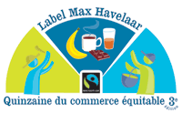

La quinzaine du commerce équitable
 En ce début de mois de mai commence la quinzaine du commerce équitable. Le commerce équitable est une forme de commerce vise à apporter plus d'équité dans le commerce international en offrant aux petits producteur du sud de meilleurs conditions de commerce. Des associations offrent à ces petits producteurs un prix qui tiens compte de la juste rémunération de leur travail et un effort pour le respect de leurs droits et de leur environnement et le maintient de leur activité. Les consommateurs qui achètent des produits équitables soutiennent ces initiatives et donne un autre visage au commerce international. Le label Max Havelaar, qui a commencé à soutenir des producteurs de café, est un des label qui permet de reconnaitre les produits équitables dans les commerces et la quinzaine du commerce équitable permet de sensibiliser le public à l'étique de ses achats. La Réunion était jadis productrice de café mais elle est aujourd'hui importatrice de beaucoup de production de pays du Sud. Elle ne pouvait pas être absente de de ce mouvement qui tente de rendre plus étiques les échanges internationaux et dès le 3 mai l'association Réunion Equitable lance sa quinzaine 2003 à elle, avec des présentations et des conférences sur les différents campus de la Réunion et des dégustations au caféco Chez Franky.